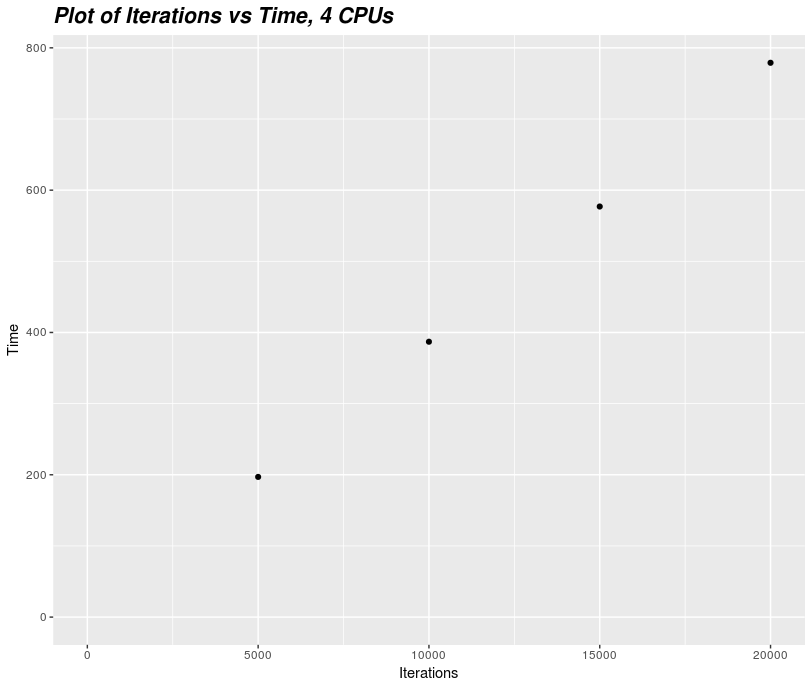
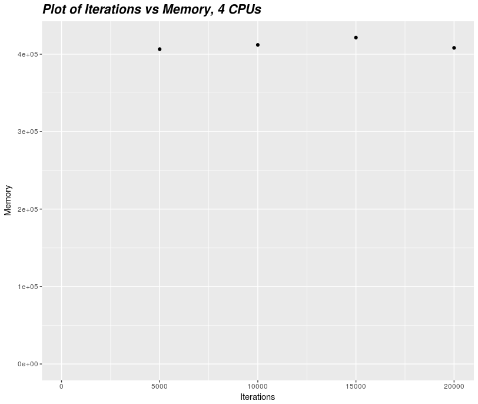
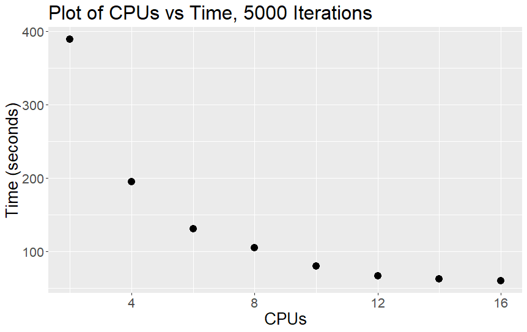
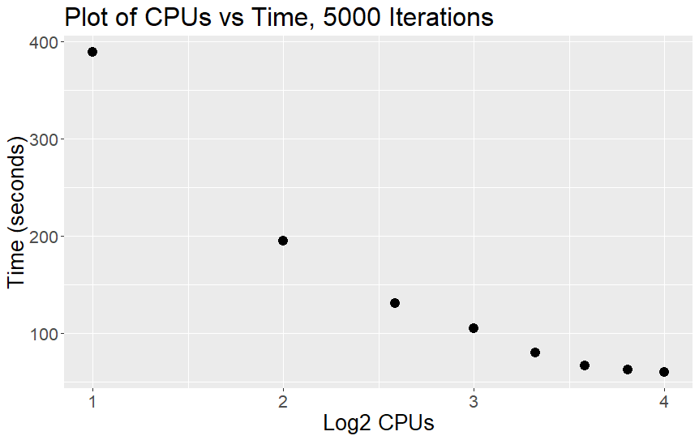
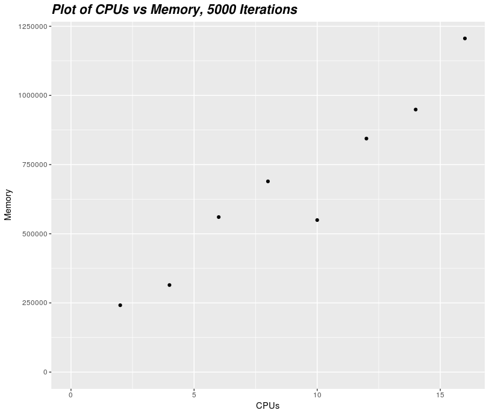

Multithreading Scaling Example
In the example below we will use R scripts to demonstrate how you might perform some basic scaling tests, however, the principles outlined in these examples are applicable across software applications. You do not need to know anything about R to understand this article; it was merely chosen for the purpose of illustration.
Initial R Script¶
library(doParallel)
registerDoParallel(strtoi(Sys.getenv('SLURM_CPUS_PER_TASK')))
# 60,000 calculations to be done:
foreach(z=1000000:1060000) %dopar% {
x <- sum(rnorm(z))
}
You do not need to understand what the above R script is doing, but for context, it will take the sum of z random numbers derived from a normal distribution with a mean of 0 and a standard deviation of 1 (where is z is a value from 1,000,000 to 1,060,000, meaning 60,000 iterations). The script will take the number of CPUs per task from the environment and and run it in parallel with that many threads. We unfortunately do not know how many CPUs, how much memory (RAM), or how much time to request for this script to complete. This means the first thing we need to do is run a small scale test and see how long that runs for. So we will first try with 5,000 iterations rather than 60,000 iterations. So now lets change the number of iterations from 60,000 to 5,000.
Revised R Script¶
library(doParallel)
registerDoParallel(strtoi(Sys.getenv('SLURM_CPUS_PER_TASK')))
# 5,000 calculations to be done:
foreach(z=1000000:1005000) %dopar% {
x <- sum(rnorm(z))
}
Now we need to write a Slurm script to run this job. The wall time, number of logical CPU cores and amount of memory (RAM) you request for this job will ideally be based on how this small-scale test runs on your local workstation, but if that is not possible, make an educated guess, and if the job fails increase the resources requested until is completes.
Tip
If you can, write your program so that it prints results and timing information out relatively frequently, for example every 100 or 1,000 iterations. That way, even if your job runs out of time or memory and gets killed, you will be able to see how far it got and how long it took to get there.
Slurm Script¶
#!/bin/bash -e
#SBATCH --job-name=Scaling5k
#SBATCH --time=00:10:00
#SBATCH --mem=512MB
#SBATCH --cpus-per-task=4
module load R
Rscript scaling.R
Let's run our Slurm script with sbatch and look at our output from
sacct.
JobID JobName Elapsed TotalCPU Alloc MaxRSS State
-------------- ------------ ----------- ------------ ----- -------- ----------
3106248 Scaling5k 00:03:17 12:51.334 4 COMPLETED
3106248.batch batch 00:03:17 00:00.614 4 4213K COMPLETED
3106248.extern extern 00:03:17 00:00:00 4 86K COMPLETED
3106248.0 Rscript 00:03:14 12:50.719 4 406516K COMPLETED
Our job performed 5,000 iterations using four logical CPU cores and a maximum memory of 406,516KB (0.4 GB). In total, the job ran for 3 minutes and 17 seconds.
We will initially assume that our job's wall time and memory will scale linearly with the number of iterations. However, we don't know that for certain that this is the case so we will need to understand the scaling behaviour of our job's resource requirements before we can submit our full job and be confident it will succeed.
To test this, we will submit three more jobs, using 10,000 15,000 and 20,000 iterations.
JobID JobName Elapsed TotalCPU Alloc MaxRSS State
-------------- ------------ ----------- ------------ ----- -------- ----------
3106248 Scaling5k 00:03:17 12:51.334 4 COMPLETED
3106248.batch batch 00:03:17 00:00.614 4 4213K COMPLETED
3106248.extern extern 00:03:17 00:00:00 4 86K COMPLETED
3106248.0 Rscript 00:03:14 12:50.719 4 406516K COMPLETED
3106249 Scaling10k 00:06:27 25:27.556 4 COMPLETED
3106249.batch batch 00:06:27 00:00.553 4 4345K COMPLETED
3106249.extern extern 00:06:27 00:00:00 4 86K COMPLETED
3106249.0 Rscript 00:06:24 25:27.002 4 412002K COMPLETED
3106250 Scaling15k 00:09:37 38:07.395 4 COMPLETED
3106250.batch batch 00:09:37 00:00.626 4 4299K COMPLETED
3106250.extern extern 00:09:37 00:00:00 4 99K COMPLETED
3106250.0 Rscript 00:09:36 38:06.768 4 421424K COMPLETED
3106251 Scaling20k 00:12:59 51:34.981 4 COMPLETED
3106251.batch batch 00:12:59 00:00.785 4 4147K COMPLETED
3106251.extern extern 00:12:59 00:00:00 4 89K COMPLETED
3106251.0 Rscript 00:12:58 51:34.194 4 408163K COMPLETED
We can see from the sacct output that the wall time seems to be
increasing as we add more iterations, but the maximum memory doesn't
seem to change much. Let's try plotting this data (we used R here, but
feel free to use excel or whatever your preferred plotting software) to
help us better understand what is happening:
 
This confirms our assumption of wall-time scaling linearly with number of iterations. However, peak memory usage appears unchanged.
Extrapolating from this data, we can estimate the full 60,000 iterations will take 12 times longer than 5,000 iterations or about 40 minutes.
But suppose we need a result more quickly than that. We are currently using 4 CPU cores, but what if we used more? Could we speed up our job by that means?
To find out we are going to have to run more tests. Let's try running
our script with 2, 4, 6, 8, 10, 12, 14 and 16 CPUs and plot the results using sacct:
JobID JobName Elapsed TotalCPU Alloc MaxRSS State
-------------- ------------ ----------- ------------ ----- -------- ----------
3063584 Scaling2 00:06:29 12:49.971 2 COMPLETED
3063584.batch batch 00:06:29 00:00.591 2 4208K COMPLETED
3063584.extern extern 00:06:29 00:00.001 2 86K COMPLETED
3063584.0 Rscript 00:06:27 12:49.379 2 241718K COMPLETED
3063585 Scaling4 00:03:15 12:46.159 4 COMPLETED
3063585.batch batch 00:03:15 00:00.558 4 4203K COMPLETED
3063585.extern extern 00:03:15 00:00:00 4 86K COMPLETED
3063585.0 Rscript 00:03:13 12:45.600 4 314603K COMPLETED
3063587 Scaling6 00:02:11 12:43.195 6 COMPLETED
3063587.batch batch 00:02:11 00:00.569 6 4512K COMPLETED
3063587.extern extern 00:02:11 00:00:00 6 92K COMPLETED
3063587.0 Rscript 00:02:09 12:42.624 6 560299K COMPLETED
3061553 Scaling8 00:01:45 13:10.690 8 COMPLETED
3061553.batch batch 00:01:45 00:00.735 8 4296K COMPLETED
3061553.extern extern 00:01:45 00:00.001 8 93K COMPLETED
3061553.0 Rscript 00:01:42 13:09.953 8 689376K COMPLETED
3107288 Scaling10 00:01:20 12:45.238 10 COMPLETED
3107288.batch batch 00:01:20 00:00.578 10 4397K COMPLETED
3107288.extern extern 00:01:20 00:00.001 10 97K COMPLETED
3107288.0 Rscript 00:01:19 12:44.658 10 549483K COMPLETED
3107322 Scaling12 00:01:07 12:46.339 12 COMPLETED
3107322.batch batch 00:01:07 00:00.525 12 4155K COMPLETED
3107322.extern extern 00:01:07 00:00:00 12 86K COMPLETED
3107322.0 Rscript 00:01:06 12:45.812 12 844047K COMPLETED
3107323 Scaling14 00:01:03 12:32.805 14 COMPLETED
3107323.batch batch 00:01:03 00:00.540 14 4112K COMPLETED
3107323.extern extern 00:01:03 00:00:00 14 87K COMPLETED
3107323.0 Rscript 00:01:01 12:32.263 14 948918K COMPLETED
3106181 Scaling16 00:01:00 12:00.619 16 COMPLETED
3106181.batch batch 00:01:00 00:00.619 16 4121K COMPLETED
3106181.extern extern 00:01:00 00:00.001 16 89K COMPLETED
3106181.0 Rscript 00:00:59 11:59.998 16 1205991K COMPLETED
 
The two above plots show the number of CPUs vs time and the Log2 of the CPUs vs time. The reason we have both is that it can often be easier to see the inflection point on the Log2 graph when the speed up from increasing the number of CPUs start to level off, as in the Log2 graph if the jobs scaled perfectly linearly (e.g. doubling the CPU's halves the runtime) the line would be straight. The curving of the line in the Log2 graph represents a loss in efficiency from increasing the number of CPUs.
As we can see, increasing the number of CPU cores doesn't linearly increase the job's speed. This non-linear speed-up is called Amdahl's Law, and reflects the fact that there is a fixed part of the computation that is inherently serial, that is, some operations can't be started until others have already finished.
Indeed, the difference in speed between 14 and 16 CPU cores is very small. We could try running our script with more than 16 CPU cores, however, in the case of this script we start to have a pretty significant drop in marginal speed-up after eight CPU cores.

Looking at our jobs' memory use, we can see that as we increase the number of CPUs taken by a job, the job's memory requirements increase approximately linearly. This behaviour isn't necessarily the case for all kinds of jobs, and is most likely to be the case for jobs that use MPI to run in parallel rather than OpenMP.
One thing to note about our plot of CPUs versus memory is that our
memory usage seems to drop for 10 CPUs, this can likely be explained by
the fact that memory usage is not measured continuously, it is instead
measured every 30 seconds. This means that if your job's memory usage
has some spikes, sacct will not necessarily detect the maximum memory
usage. This is something that you should be aware of when you estimate
the memory usage of all your jobs.
Looking at the memory usage for an 8 CPU job, it looks like an 8 CPU has a maximum memory requirement of 0.75 GB.
Estimating our Total Resource Requirements¶
Now that we know approximately how our job's CPU, memory and wall requirements scale, we can try and estimate our total resource requirements for our 60,000 iteration job.
From this data we have determined that more than 8 CPUs has very limited additional speed and an 8 CPU job should use about 0.75 GB of memory at most, and that this memory requirement should remain relatively consistent, regardless of the number of iterations. Given this information we can estimate our full size job's resource requirements. Since our 8-CPU, 5,000 iteration job took 1 minute and 45 seconds, our full scale job should take 12 times longer (21 minutes) and require 0.75 GB of memory. To be on the safe side, let's request 1 GB of memory and 30 minutes.
Revised Slurm Script¶
#!/bin/bash -e
#SBATCH --account=nesi99999
#SBATCH --job-name=Scaling60k # Job name (shows up in the queue)
#SBATCH --time=00:30:00 # Walltime (HH:MM:SS)
#SBATCH --mem=512MB # Memory per node
#SBATCH --cpus-per-task=8 # Number of cores per task (e.g. OpenMP)
module load R
Rscript scaling.R
Checking on our job with sacct
JobID JobName Elapsed TotalCPU Alloc MaxRSS State
-------------- ------------ ----------- ------------ ----- -------- ----------
3119026 Scaling60k 00:20:34 02:41:53 8 COMPLETED
3119026.batch batch 00:20:34 00:01.635 8 4197K COMPLETED
3119026.extern extern 00:20:34 00:00.001 8 89K COMPLETED
3119026.0 Rscript 00:20:33 02:41:51 8 749083K COMPLETED
It looks as though our estimates were accurate, but looking at our maximum memory usage it is a good thing that we requested additional memory as we may otherwise have run out.
Tip
Whenever you submit a job it is always a good idea to request about 20% more wall time and memory than you think you are going to need to minimise the chance of your jobs failing due to a lack of resources. Your project's fair share score considers the time actually used by the job, not the time requested by the job.